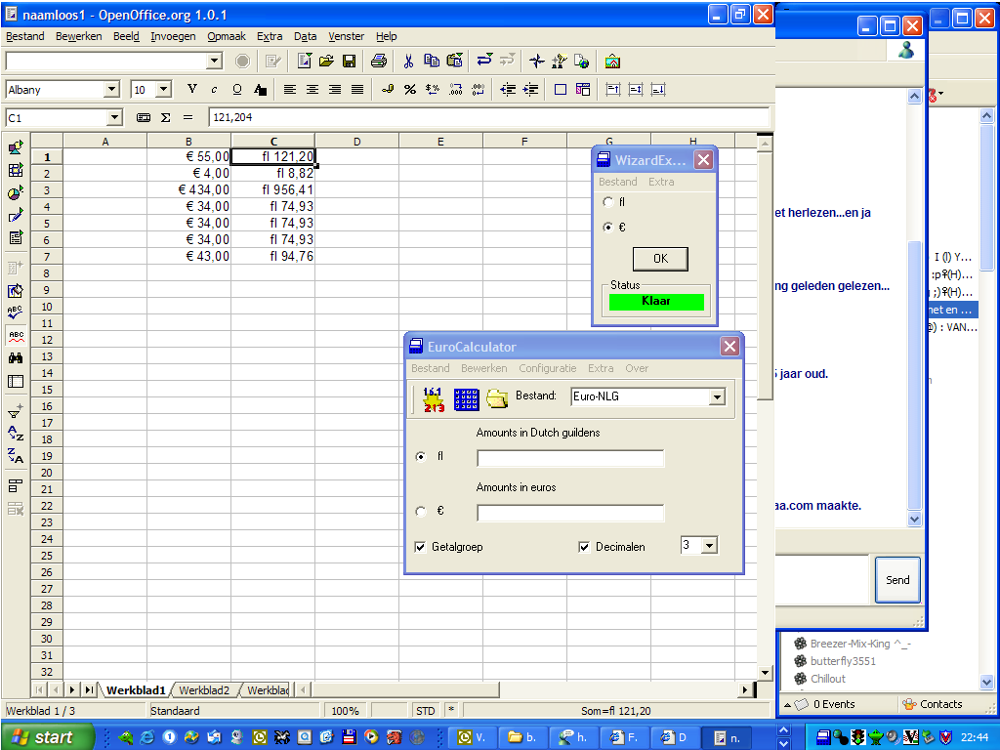
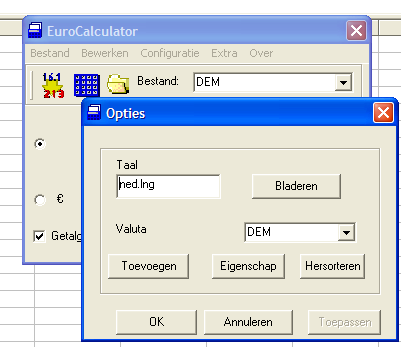

Gebruikershandleiding voor de Syscalculator 1.74
Inleiding
Hartelijk dank voor het gebruik van onze software.
Syscalculator begon als euro-conversietool en wordt nu onderhouden als klassiek legacy-conversieprogramma. Versie 1.74 is een onderhoudsrelease uit 2026 van de originele VB6-lijn. Deze versie bevat 21 oude euro-valutaconverters, inclusief nieuwere eurolanden zoals Kroatie 2023 en Bulgarije 2026.
Deze release houdt de klassieke Syscalculator-werkwijze beschikbaar terwijl de moderne Syscalculator 2.0-lijn wordt ontwikkeld. Syscalculator combineert de volgende handige eigenschappen in 1 programma.
Syscalculator :
INDEX
2. De WizardExpress. een conversie hulpmiddel
3. Conversie van b.v. Guldens naar Duitse Marken (Tri-Conversie)
5. Freesyscal.cfg en Taal instellen
7. 'Altijd zichtbaar' optie instellen
8. Aantal decimalen instellen.
Schakel deze optie uit indien je het inleidend scherm niet telkenmale wenst terug te zien na het eerste opstarten van Syscalculator.
Wizardexpress, een conversie hulpmiddel.
WizardExpress kan in combinatie met oudere toepassingen zoals Excel, Word of andere klassieke Office-programma's, inclusief LibreOffice, gebruikt worden. Dit hulpmiddel zal je bedragen converteren van, b.v., guldens naar Euro. Het is een conversiehulpmiddel dat op dezelfde wijze werkt zoals de 'Zoeken & Vervangen' functie.
Compatibiliteitsnotitie: WizardExpress is bedoeld voor oudere Office- en Word-versies. LibreOffice is getest en werkt ok. Microsoft 365 / Office 365 werkt bekend niet betrouwbaar met deze oude VB6-koppeling.
1. Voeg een nieuwe kolom in je werkblad in en definieer de celopmaak als valuta-waarden (Euro)
2. Selecteer alle bedragen (uitsluitend waarden, geen tekst) en kopieer deze geselecteerde bedragen (= naar het klembord).
3. Start de Syscalculator WizardExpress
Optie: Als u getallen met punten wil laten converteren, dan kunt u getalgroep aanvinken. Het zal getallen met punten 'xx.xxx.xxx' tonen.
4. Klik op de "OK" toets om alle waarden te converteren. Wacht tot het rode 'start' teken in de statusbox wijzigt in het groene 'klaar' signaal.
Belangrijk: kopieer geen andere informatie naar het klembord vooraleer je de 'ok' knop aanklikt op de WizardExpress: dit zal immers het verlies van de waarden die je wou converteren tot gevolg hebben. Je zal dan dienen opnieuw te beginnen.
5. Plaats de cursor in de nieuw gemaakte kolom en kies voor 'Plakken'. In gewone klassieke toepassingen kan dat via het plakmenu of de muis. Gebruik bij Excel / Microsoft 365 direct Ctrl+V na de conversie, omdat Excel eigen clipboard-management heeft. De nu geconverteerde bedragen zullen verschijnen, zoals getoond in het volgende voorbeeld :

6. Klaar ! Sluit de Wizard voor een volgend gebruik.
Eigenschap: Symbool.
Als de optie 'symbool' in de optie box aangevinkt is, dan zal het
gepaste symbool de ingevoegde gegevens voorafgaan,
bijvoorbeeld: fl 351,53 -> € 241,22
Als de optie 'symbool' niet is aangevinkt, dan zal er geen symbool toegevoegd worden aan de ingevoegde waarden.
Converteren van Gulden naar Duitse Mark (Tri-Conversie)
Je kan heel eenvoudig b.v bedragen in Gulden naar Duitse Mark of naar elke andere munteenheid van je keuze converteren
1. Kopieer de geselecteerde bedragen en zet ze om naar Euro door de verschillende stappen te volgen zoals hiervoor beschreven in Wizardexpress, een conversie hulpmiddel
2. Wijzig: NLG -> DEM (in de keuzelijst)
3. Kies: Euro in WizardExpress (in de optiebox)
4. Converteer deze bedragen naar de munteenheid van je keuze door de verschillende stappen te volgen zoals hiervoor beschreven in Wizardexpress, een conversion hulpmiddel

Dit is een standaard rekenmachine. Je kan hiermee ook berekende bedragen converteren.

Instellen van de standaard valuta waarde en taal

Je kan de standaard ingestelde taal en/of valuta waarde wijzigen naar keuze (daartoe dient er evenwel een bestaand '*.lng' bestand aanwezig te zijn). Je kan ook een nieuwe munteenheid toevoegen.
Kenmerken :
- Hernoemen van munteenheden.
U kunt aantal decimalen wijzigen. Aantal decimalen is maximum 11. Als u dit optie decimalen uitschakelt, dan zal Syscalculator uitvoeren met aantal decimalen die op de script staat.
Een eenheid als standaard instellen
Jouw keuze van een nieuwe 'standaard' eenheid zal er in resulteren dat vanaf de eerstvolgende maal dat je Syscalculator opstart, deze waarde als standaard door het programma zal gebruikt worden.
Editor
Gebruik de 'Editor' om de scripts inzake munteenheden te wijzigen/aan te passen (dit is uitsluitend voor experten).Wens je meer te weten over het gebruik van alle commando's, dan kan je ons e-mailen bij Tiedragon. We zullen je dan een uitgebreide documentatie m.b.t. het gebruik van de commando's en voorbeelden toesturen.
Bondige uitleg over enkele commando's:
Symb1 , Symb2
Het gekozen symbool zal verschijnen op de Eurocalculator (in de 'valuta'' rij). Symb1 en Symb2 zijn symbolen die voorafgaan aan de waarden die getoond worden in de Eurocalculator (in de 'Amounts in ...' rijen).
Symb3, Symb4
Symb3 en Symb4 zijn symbolen die op de waarden volgen wanneer je de WizardExpres gebruikt om geconverteerde waarden in andere toepassingen te plakken.
Bijvoorbeeld:
Symb1 fl
Symb2 DM
Math <waarden>
ans is de eerste waarde die je inbrengt. Deze waarde zal geconverteerd worden naar een nieuwe muntwaarde.
Bijvoorbeeld:
Math ans / 2,12412
Math ans * 4,12451
Indien je meer informatie over deze commando's wenst te ontvangen, stuur dan een e-mail naar info@tiedragon.com
Vertaling naar andere talen:
Als je wenst bij te dragen aan de verdere ontwikkeling van Syscalculator door teksten (naar je moedertaal) te vertalen, gelieve dan je bestanden naar tiedragon te versturen.
We zullen je taalbestanden dan op onze website publiceren, zodat ze ook voor anderen beschikbaar zijn.
Reeds vertaalde bestanden:
-eng.lng
-Alle documenten die betrekking hebben op Syscalculator
Optionele instellingen
Configuratie -> Tray.
Vink deze optie aan om systray te activeren.
Tray zal als gevolg hebben dat Syscalculator zich verbergt in de taakbalk. Syscalculator zal eenvoudig kunnen geactiveerd worden door het icoontje aan te klikken.
De actieve tray Syscalculator beëindig je met een rechtsklik van de muis : kies vervolgens 'afsluiten''
Configuratie -> Altijd zichtbaar.
WizardExpress en Calculator zullen automatisch op de voorgrond blijven, dus vóór alle actieve toepassingen.
Mocht je een probleem ondervinden met deze software, gelieve ons dan te contacteren. Indien een echte 'bug' gevonden wordt zullen we dit zo snel als mogelijk trachten op te lossen. Je kan ons contacteren op de volgende wijze:
Via het menu About -> Feedback
Via onze website : https://www.tiedragon.com
Per e-mail: je kan ons een e-mail sturen op ons bedrijf : info@tiedragon.com
Copyright (c) 1996-2026